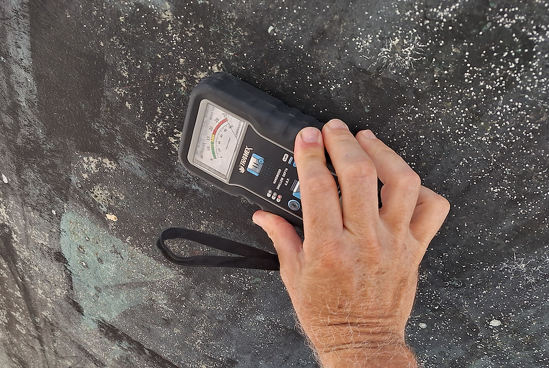
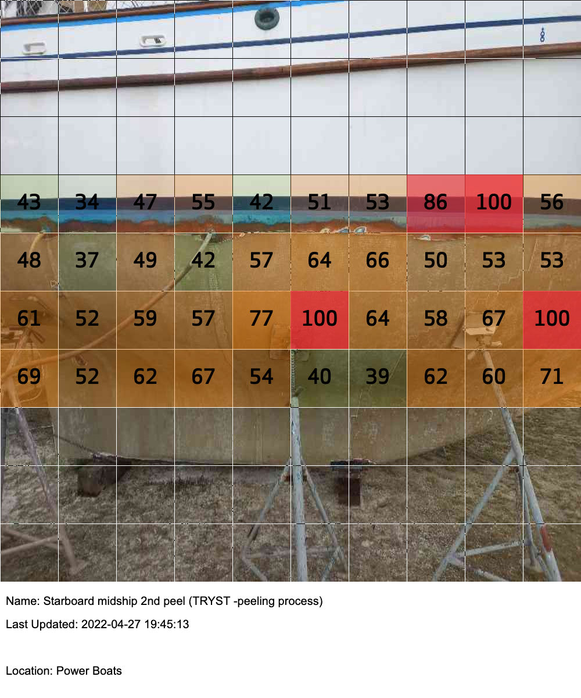

Osmosis Survey
Osmosis Testing with a Moisture Meter
Used to determine if excess moisture is present in areas of the hull that may not be visible to the eye. Moisture can be present without delamination occurring and this can pinpoint potential problem areas.
This type of testing may be undertaken on a vessel that shows signs of moisture intrusion around fittings, blisters, or soft spots in the transom stringers and bulkheads. However, this test is not an infallible way to test for moist areas. Many variables come into play when using a moisture meter. These include delamination, bottom paint, voids in the lay-up of mat and resin, water in the bilge, and the length of time the boat has been out of the water. The meter may detect moisture that can only be verified by destructive testing of the hull to verify the meter readings.
Osmosis Treatment Monitoring
The values in the photo below do not represent percent moisture content but are relative values. The actual percent of water in these readings is not over 1% to 2% by weight. When performing an Osmosis Survey, a complete scan of the entire hull surface from the load water line down is made and reported as a series of images like the one above. Areas of interest are scanned in greater detail and reported. When a hull is drying out before being peeled or having been peeled, it is good practice to allow it to dry further and repeat these measurements until the hull is dry enough to begin laminating new layers of fiberglass, fairing compound, barrier coat, and antifoul paint.
More information about Blisters and Osmosis
Over the years, much information has been published about this issue, and there are many opinions. Below is an excellent series of articles by Steve D' Antonio that appeared in Ocean Navigator magazine. The article explains blisters and osmosis as reflections of our thinking and experience.

